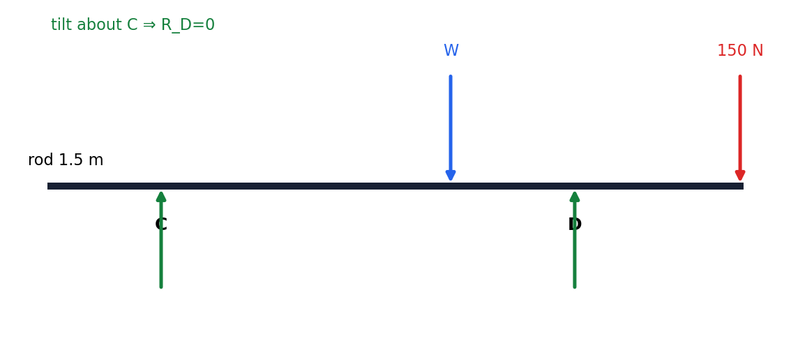

Packet Q5 / Official WME01 Q4 — moments and tilting
From the paper. A non-uniform branch of length \(1.5\ \mathrm{m}\) rests on two supports C and D, placed \(0.24\ \mathrm{m}\) and \(0.36\ \mathrm{m}\) from its ends. The weight \(W\) acts at a distance \(x\) from C. Two tilting cases (loads \(150\ \mathrm{N}\) and \(225\ \mathrm{N}\)) give two equations; find \(W\) and \(x\).
Official marks: 8 — both values, not split by the paper. The two scenarios below share that single 8-mark allocation; no subpart split is invented.

Equate clockwise and anticlockwise moments about C; a zero reaction (or a force through the pivot) contributes no moment.
Formula: clockwise moments = anticlockwise moments about C.
\(Wx=150(1.5-0.24)=150(1.26)=189\).
Sense check: only \(W\) (at \(x\)) and the \(150\ \mathrm{N}\) load produce moments about C.
Take moments about D for equation (B), then divide (A) by (B) to cancel \(W\).
\(225(0.36)=(1.5-0.36-0.24-x)W\ \Rightarrow\ 81=(0.9-x)W\).
\(\dfrac{Wx}{W(0.9-x)}=\dfrac{189}{81}=\dfrac{7}{3}\ \Rightarrow\ \dfrac{x}{0.9-x}=\dfrac{7}{3}\).
\(3x=7(0.9-x)\ \Rightarrow\ 10x=6.3\ \Rightarrow\ x=0.63\ \mathrm{m}\).
Back-substitute: \(W=\dfrac{189}{0.63}=300\ \mathrm{N}\).
Sense check: \(0.9-0.63=0.27\); \(300(0.27)=81\) matches.
Retrieve the symbolic route before substituting numbers.
1. Read the command. "Show that" ends at the displayed result; "exact" forbids an early decimal; "magnitude" means a positive quantity (drop modulus bars); "find the acceleration" needs Newton's 2nd law along the resolving direction.
2. Formula first. Write a named formula or identity symbolically, then substitute: momentum \(mv\), impulse \(mv-mu\), the SUVAT set, \(F=\mu R\) (and \(F\le\mu R\)), principle of moments (clockwise = anticlockwise about a pivot).
3. Preserve the carry-in. Treat each displayed carry-in as known while the earlier grey working is covered. State the new equation created from it rather than referring vaguely to an earlier part.
4. Final check. Check signs, domain or positivity, units where applicable, and requested rounding. Keep stored unrounded values (e.g. \(a=1.1838\ldots\)) until the final requested precision.
Dual-label discipline. The card you worked from is the tutor packet; the official paper is WME01/01 January 2023. Both labels are shown so a packet number never stands alone.